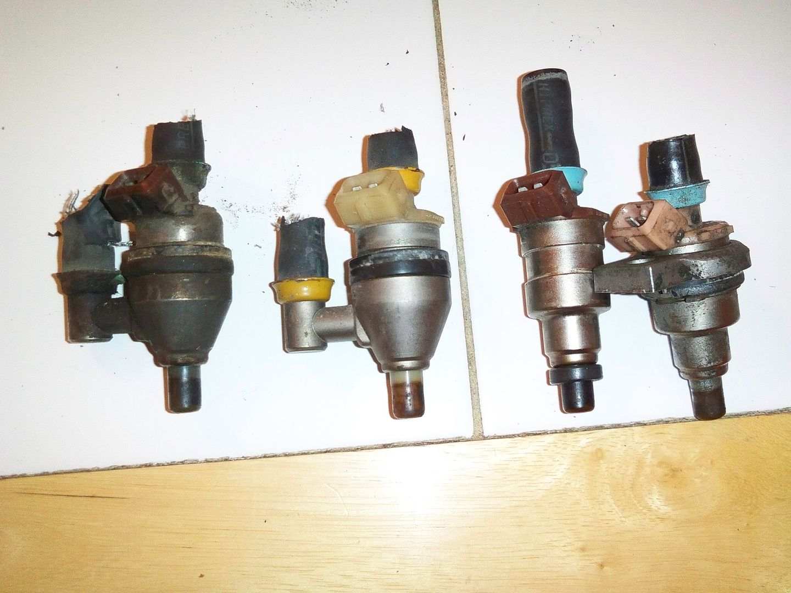

-
Ok so I need some help here. It seams that the stock Nissan injectors arent that easy to identify or at least im getting my ass kicked trying. Here's what I know.
High impedence
Off of an 88 Z31
Visible part number is 2341 64 01 and A46-000001
What I need to know is are they turbo or na? -
**Disclaimer about JECS numbers. These numbers do not represent a Part Number, but yet a manufacture date and batch codes. There is no way to tell the flow rate of a JECS injector by the number alone! Color, connectors, and style are a "better" way to determine the injector you have.
-
^ what Vagabond said.
Only way to tell the yellow top side feeds apart is to break on off and have it flow tested.
-
I think I got some INFO.
Left > Right: Side Feed Turbo, Side Feed NA, Top Feed Turbo, Top Feed NA

There is info I found somewhere around the interwebs that post service campaign side feed injectors all look the same, "natural" (yellowish with age) but I can't confirm that.
These are pics of my actual injectors. -
I can, NA and turbo campaign side feeds look the same. if you ask RJ, they're NATURAL not yellow :Pvagabond wrote:
There is info I found somewhere around the interwebs that post service campaign side feed injectors all look the same, (yellowish) but I can't confirm that.- VG30DET (HE341) 86 300ZX - 1982 280ZX Turbo - Headered NA 1986 300ZX 2+2 - 2000 Xterra - -
Ah, then yellowed with age. Thanks, I'll change that.
Any one want to confirm that older side feed turbo injectors were brownish/burgundy? -
so how do can you tell if post campaign side feeds are turbo or na injectors?

Copyright © 2006–. All rights reserved. Privacy Policy